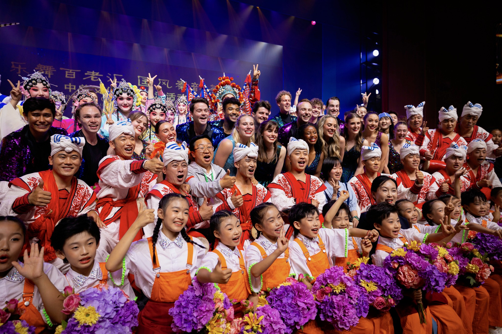

Luke Christensen
Thoughtful products.
Measurable progress.
I’m Luke, a product manager who connects user needs, data, and business strategy to build useful digital experiences.
From finding the problem to moving the metric.
Building a storefront that does the busywork.
Built a seven-agent Python system to take designs from quality checks to published product listings.
Helping new users take the first meaningful step.
Mapped the full onboarding journey, defined the opportunity, and authored PRDs to help more users start their family trees.

Curious by default.
I’m studying Strategic Management at the BYU Marriott School of Business. I’m drawn to the intersection of people, technology, and business—and to making complex things easier to use.
Outside of work, I enjoy singing, dancing, and theater, exploring the Tetons, and spending time with the people who matter most.